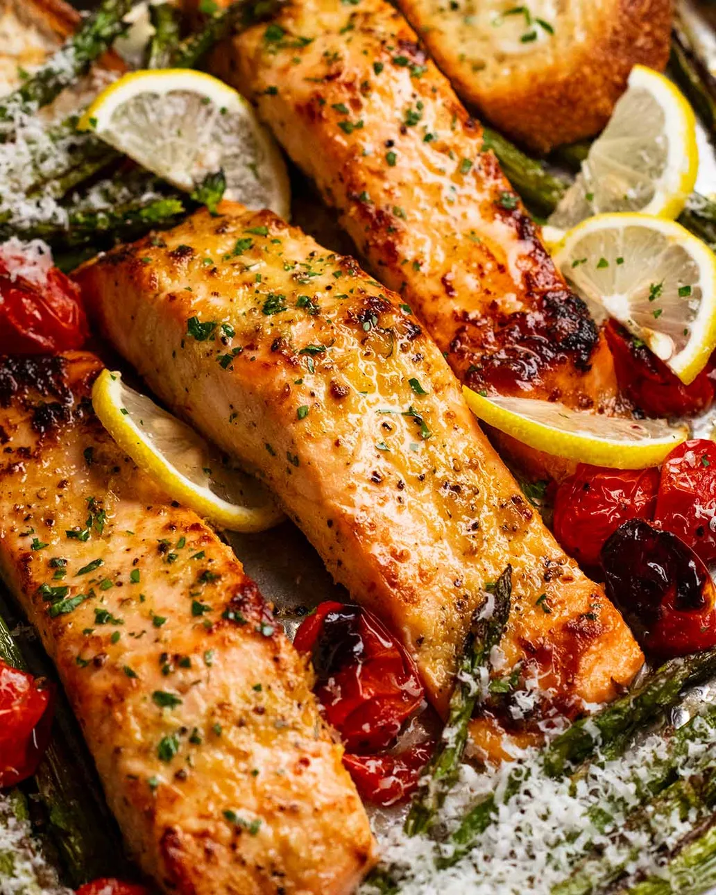

Lemon Garlic Salmon
Home

Description
This is a tasty salmon tray bake recipe that's as simple as it is healthy. Salmon is slathered with an assertive lemon garlic paste that adds a stack of flavour, then cooks in just 11 minutes alongside parmesan asparagus and blistered cherry tomatoes.
Ingredients
- 4 x 180g salmon fillets
- 1 tbsp lemon juice
- 2 tbsp extra virgin olive oil
- 1 tsp dijion mustard
- 2 garlic cloves
- 1/2 tsp cooking salt
- 3 tbsp brown sugar
- 1/4 tsp black pepper
Steps
- Lemon garlic paste - Mix the marinade ingredients in a small bowl. Slather onto the top and sides of the salmon.
- Preheat oven grill / broiler to 280°C/525°F or as high as yours goes. Place the oven shelf 20 cm /8" from the heat source.
- Prepare tray - Toss the asparagus and cherry tomatoes with the olive oil, salt and pepper. Spread out on a large tray then clear space for the salmon. Place salmon on the tray leaving a bit of space between each. Spray surface of salmon with oil.
- Cook - Grill/broil for 11 minutes or until the salmon is done - the flesh should flake, the internal temperature should be 50°C/122°F.
- Serve - Transfer salmon and vegetables to plate. Grate parmesan over the vegetables. Squeeze lemon juice over the salmon, sprinkle with parsley.